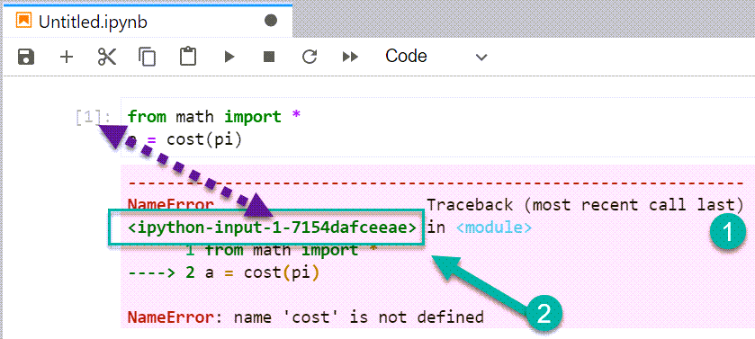
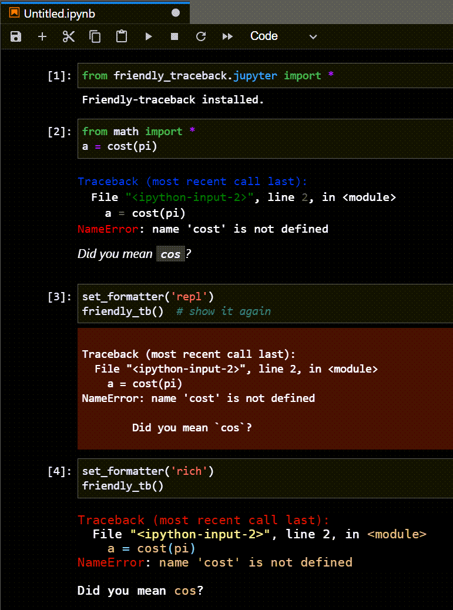

Warning
This project is being split into 3 separate projects:
friendly_traceback,friendly, andfriendly_idle.
The documentation does not reflect this change.
If you are a end-user, just install friendly until further notice.
Jupyter notebooks¶
Friendly supports Jupyter notebooks and variants. Currently, this has been done more as a proof of concept than anything else: I am not aware of anyone else having made use of this feature. I also almost never test it; please feel free to report any issues.
JupyterLab notebook¶
By default, tracebacks in JupyterLab notebooks (or Juypter notebooks) displayed in a browser are given a pink background (1).
{kind=link}
The “location” of the error (2) includes is of the form
<ipython-input-A-B> where A is the code block number
and B is an internal value (“hash_digest”) of no particular use
to a end user. This hash_digest is removed by friendly
as shown below.
{kind=link}
To use friendly, we use a special import statement.
Tracebacks shown by friendly do not have a pink background. Note how the “file” name has been shortened, compared with Jupyter’s default.
The formatter value is changed from the default to
'bw'which is meant to be short for “black and white” meaning that no special colouring is done..This
'bw'choice results in a plain output on pink background.A different syntax colouring (
'light') is also available.The colour scheme with this formatter is fairly similar to the default used for Jupyter notebooks.
After changing to the 'light', I displayed a more complete
content displayed with explain()
{kind=link}
When using from friendly.jupyter import *,
the default formatter is known as 'jupyter'.
{kind=link}
Dark background¶
JupyterLab also gives the choice of a dark background theme. Here’s how the previous example look with this dark theme.
{kind=link}
As a last step, I changed the formatter to use the 'dark' option,
which is the default for the friendly console when used in a terminal.
{kind=link}
Finally, here is the result from changing back to the default
'jupyter' formatter.

For the dark Jupyter theme, some elements, such as numbers and operators,
are very difficult to read.
For this reason, I much prefer using the 'dark' friendly
formatter in this case.
About the hash_digest¶
The hash_digest is meant to uniquely identify the content of a code block. However, this does not appear the case when the same code is entered in different cells for sessions where one uses more than one notebook. I suggested what I believe is a better approach using the kernel number instead of the hash_digest: the combination of the code-block number and kernel number should be unique. However, IPython developers are certainly swamped with issues to consider and would be right not to consider this a high priority item to look at, although it might prevent some messages one occasionally gets about the need to restart a kernel.